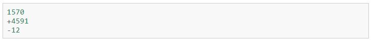

- Problema, Algoritmo y Programa
- Metodología de la Programación de Computadores
- Paradigmas y Lenguajes de Programación
- Ejercicios resueltos y propuestos
- Estructura General del Lenguaje
- Comentarios
- Variables – Identificador y Tipo de Dato
- Interfaz Gráfica de Usuario - GUI
- Operadores de Asignación y Aritméticos
- Operadores Relacionales y Lógicos
- Expresiones, Instrucciones y Bloques
- Herramientas: Entorno Integrado de Desarrollo (IDE)
- Ejercicios resueltos y propuestos.
- Bloque condicional if/else
- Ejercicios resueltos y propuestos
- Sentencia de selección múltiple switch
- Ejercicios resueltos y propuestos
- Ciclos Haga Mientras - while
- Ciclos Haga Hasta - do/while
- Ciclos Haga Para - for
- Concepto Fundamental de Función, procedimiento o método
- Ámbito de variables
- Recursividad
- Sobrecarga
- Ejercicios resueltos y propuestos
- Concepto
- Declaración e Inicialización
- Tamaño y acceso a los elementos
- Recorrido y Procesamiento
- Búsqueda
- Ordenamiento
- Ejercicios resueltos y propuestos
- Clases y Objetos
- Atributos o Propiedades
- Métodos
- Constructores y Destructores
- Instanciación
- Sobrecarga de métodos
- Paquetes de clases
- Ejercicios resueltos y propuestos
Contenido
Unidad I. Introducción a la Programación de Computadores
Unidad II. Fundamentos del Lenguaje de Programación
Unidad III. Bloques Condicionales
Unidad IV. Bloques Iterativos
Unidad V. Bloques tipo función, procedimiento o método.
Unidad VI. Arreglos Unidimensionales
Unidad VII. Introducción a la POO
Tipos de datos
Un tipo de datos es la propiedad de un valor que determina su dominio (qué valores puede tomar), qué operaciones se le pueden aplicar y cómo es representado internamente por el computador. Todos los valores que aparecen en un programa tienen un tipo. A continuación revisaremos los tipos de datos elementales de Python. Además de éstos, existen muchos otros, y más adelante aprenderemos a crear nuestros propios tipos de datos.
Números enteros
El tipo int (del inglés integer, que significa «entero») permite representar números enteros. Los valores que puede tomar un int son todos los números enteros: ... -3, -2, -1, 0, 1, 2, 3, ... Los números enteros literales se escriben con un signo opcional seguido por una secuencia de dígitos:
Números reales
El tipo float permite representar números reales.
El nombre float viene del término punto flotante, que es la manera en que el computador representa internamente los números reales.
Hay que tener mucho cuidado, porque los números reales no se pueden representar de manera exacta en un computador. Por ejemplo, el número decimal 0.7 es representado internamente por el computador mediante la aproximación 0.69999999999999996. Todas las operaciones entre valores float son aproximaciones. Esto puede conducir a resultados algo sorpresivos:
Números complejos
El tipo complex permite representar números complejos.
Los números complejos tienen una parte real y una imaginaria. La parte imaginaria es denotada agregando una j inmediatamente después de su valor: